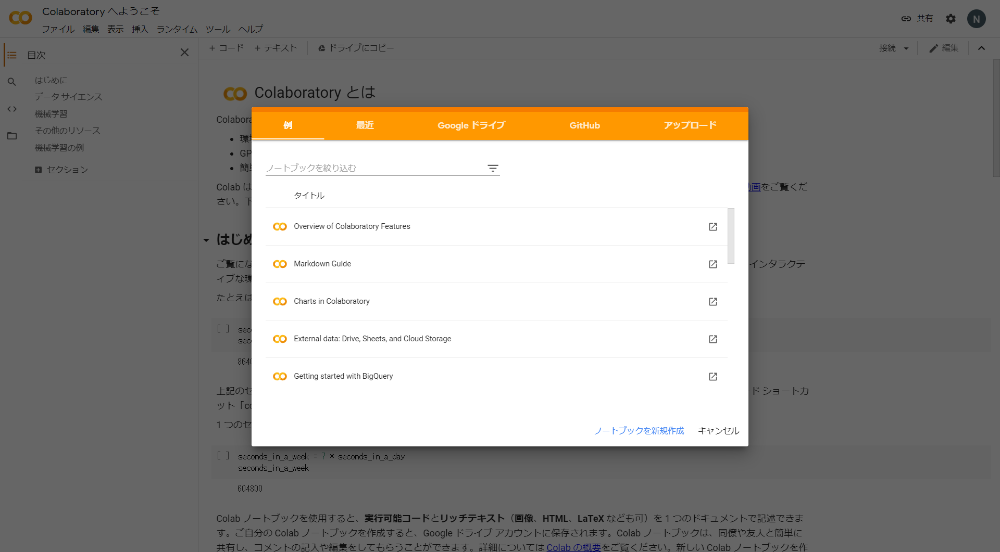
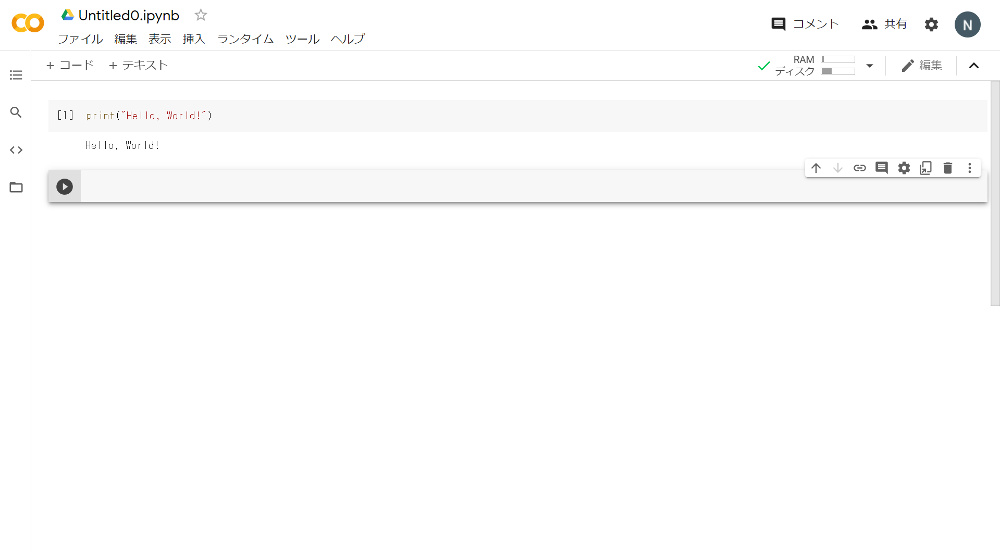
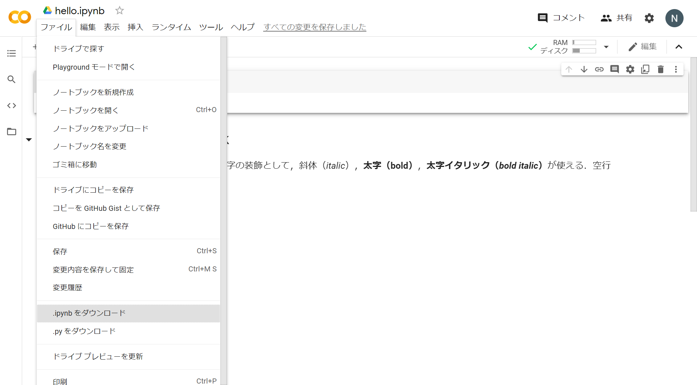
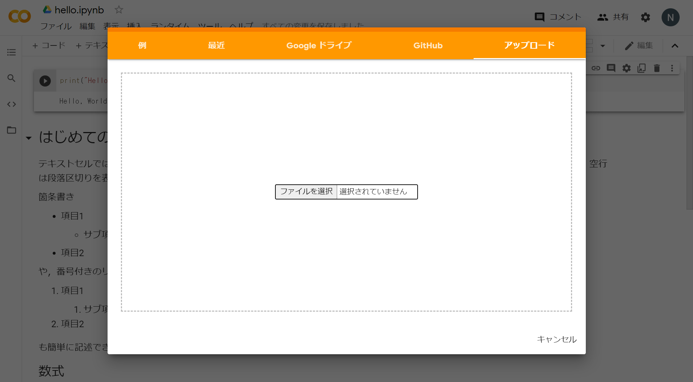

Jupyter Notebook#
Jupyter Notebookとは#
Jupyter Notebookは、プログラムとその実行結果、Markdown形式のドキュメント、LaTeX形式（MathJax）の数式、図表などをまとめて記述・格納できるウェブアプリケーションである。データ分析や機械学習の実行過程の「ノート」をつける用途だけでなく、ブラウザ上でお手軽にプログラミングを体験する環境としても広く普及している。
例えば、物理の解説とその実験を行うプログラム、その実行結果をまとめたノートを作ることができる。

Jupyterの前身であるIPython Notebookは、PythonのインタラクティブなシェルであるIPythonのプロジェクトとして開発が進められ、研究者や開発者から急速な支持を集めた。プログラミング言語に依存した部分（カーネルと呼ばれる）を分離し、Python以外の言語のサポートも進んだことから、IPython NotebookはJupyterプロジェクトにスピンオフされた。
Google Colaboratory#
Google ColaboratoryはGoogleが提供するクラウド実行型のJupyter環境である。後述する制限はあるものの、Googleアカウントがあれば無料で利用できる。詳しくは、Colaboratory へようこそ（公式ドキュメント）を参照のこと。
Google Colaboratoryを開始する#
Googleアカウントにログインしたブラウザで、https://colab.research.google.com/ にアクセスすればよい。以下の画面で「ノートブックを新規作成」を選ぶ。

すると、以下の画面のように新しいノートブックが作成される。

セルの操作#
ノートブックはプログラムやテキストを記述するセルと呼ばれるブロックの集まりで構成されている。セルはプログラムを記述し、その実行結果を保持するコードセルと、文章を記述するテキストセルの2種類に大別される。新しく作成されたセルはコードセルとして動作する。
Pythonのコードを実行するには、セルにプログラムを入力し、⌘/Ctrl + Enterキーを押す。すると、Googleのクラウドサーバ上でプログラムが実行され、その実行結果がブラウザに表示される。ここでは、以下のプログラムを入力・実行し、その出力が表示されている。
print('Hello, World!')

テキストセルを作成するには、「挿入」メニューからテキストセルを追加するか、いったん作成されたコードセルを選択して、⌘/Ctrl + m -> mを押す。

テキストセルではMarkdown記法を用いることができるほか、LaTeX形式で数式を記述できる。

セルの位置の移動や出力の消去などは、メニューから行える。その他、Google Colaboratoryで便利なキー操作を以下に挙げる。なお、このキー操作は「ツール」メニューの「キーボード ショートカット」から一覧を閲覧したり、キー割り当てを変更できる。
カーソル（十字）キー: 選択セルを変更
⌘/Ctrl+Enter: 実行（コードセル）、または確定（テキストセル）⌘/Ctrl+m->i: 実行を中断⌘/Ctrl+m->a: 上にコードセルを追加⌘/Ctrl+m->b: 下にコードセルを追加⌘/Ctrl+m->d: セルを削除⌘/Ctrl+m->y: コードセルに変更⌘/Ctrl+m->m: テキストセルに変更⌘/Ctrl+m->k: セルを一つ上に移動⌘/Ctrl+m->j: セルを一つ下に移動
ノートブックの保存、ダウンロード、アップロード#
左上の名前（デフォルトでは"Untitled?.ipynb"となっている）の部分をクリックすることで、保存するファイル名を変更できる。

作成したノートブックは「ファイル」->「.ipynb をダウンロード」をクリックすることで、ダウンロードできる。保存されるファイルの拡張子は".ipynb"である。

逆に、手元にある.ipynbファイルをアップロードして、Google Colaboratory上で閲覧したり、動かすこともできる。「ファイル」->「ノートブックをアップロード」をクリックし、以下の画面になったらアップロードしたいファイルをドラッグ・ドロップすればよい。

無料版Google Colaboratoryの制限#
Google Colaboratoryで新しいノートブックを開くと、プログラムの実行環境であるインスタンスが立ち上がる。そのインスタンスは立ち上げから12時間で強制終了となる。また、Colaboratoryにアクセスしているブラウザを閉じるなど、インスタンスとのセッションが切れた状態が90分続いても、強制終了となる。ただ、ノートブックそのものはGoogle Drive上に保存され続けるので、新たにノートブックを開いてインスタンスを立ち上げ直せば、再度実行することができる。プログラミングや機械学習の勉強用途であれば、無料版のGoogle Colaboratoryで十分と思われる。
自分のパソコンにJupyterをインストールする#
Jupyterを自分のパソコンにインストールして動作させることもできる。この場合、Google Colaboratoryでノートブックを実行するときのような時間制限はない。Windows 10の場合、以下の2つの方法が現実的と思われる。
Windows Subsystem for Linux (WSL)上にUbuntuをインストールし、さらにcondaをインストール
Windows版のAnacondaをインストールする
1.はインストールに手間がかかるが、Linux環境上でJupyterを動作させることができる。ネット上の多くの解説はLinux系の環境を前提としているため、こちらの方が環境の違いで悩まされずに済む。2.はお手軽にインストールできるが、コードセルでWindowsのコマンドしか実行できず、ネット上の解説の通りにならないことがある。また、デフォルトの文字コードが UTF-8 ではなく、Shift_JIS (CP932) になることにも注意が必要である。
自分のパソコンにJupyterをインストールした場合は、Jupyter Notebookの進化版であるJupyter Labを使うことができる。

Jupyter (IPython) の便利機能#
入力や出力の参照#
x, y = 10, 5
x + y
15
x - y
5
x * y
50
x / y
2.0
_, __, ___
(2.0, 50, 5)
In[2]
'x + y'
Out[2]
15
シェルコマンドの実行#
!ls *.txt
prefecture.txt prefecture3.txt requirements.txt
prefecture2.txt prefecture4.txt tokyo-covid.txt
!cat prefecture.txt
東京 とうきょう Tokyo
神奈川 かながわ Kanagawa
千葉 ちば Chiba
埼玉 さいたま Saitama
!cut -f2 -d" " prefecture.txt
とうきょう
かながわ
ちば
さいたま
yomi = !cut -f2 -d" " prefecture.txt
yomi
['とうきょう', 'かながわ', 'ちば', 'さいたま']
イントロスペクション#
print?
Docstring:
print(value, ..., sep=' ', end='\n', file=sys.stdout, flush=False)
Prints the values to a stream, or to sys.stdout by default.
Optional keyword arguments:
file: a file-like object (stream); defaults to the current sys.stdout.
sep: string inserted between values, default a space.
end: string appended after the last value, default a newline.
flush: whether to forcibly flush the stream.
Type: builtin_function_or_method
str.format?
Docstring:
S.format(*args, **kwargs) -> str
Return a formatted version of S, using substitutions from args and kwargs.
The substitutions are identified by braces ('{' and '}').
Type: method_descriptor
実行速度の計測#
%timeit sum(range(1000))
11.1 µs ± 674 ns per loop (mean ± std. dev. of 7 runs, 100000 loops each)
%timeit sum([x for x in range(1000)])
24.3 µs ± 1.01 µs per loop (mean ± std. dev. of 7 runs, 10000 loops each)
%timeit sum(x for x in range(1000))
31 µs ± 298 ns per loop (mean ± std. dev. of 7 runs, 10000 loops each)
%%timeit
s = 0
for i in range(1000):
s += i
31.4 µs ± 288 ns per loop (mean ± std. dev. of 7 runs, 10000 loops each)
デバッグ#
def count_upper(s):
n = 0
for c in s:
if c.isupper():
++n
return n
count_upper('New York')
0
%pdb on
Automatic pdb calling has been turned ON
def count_upper(s):
breakpoint()
n = 0
for c in s:
if c.isupper():
++n
return n
count_upper('New York')
> <ipython-input-23-e2234f85ac9f>(3)count_upper()
1 def count_upper(s):
2 breakpoint()
----> 3 n = 0
4 for c in s:
5 if c.isupper():
> <ipython-input-23-e2234f85ac9f>(4)count_upper()
2 breakpoint()
3 n = 0
----> 4 for c in s:
5 if c.isupper():
6 ++n
> <ipython-input-23-e2234f85ac9f>(5)count_upper()
3 n = 0
4 for c in s:
----> 5 if c.isupper():
6 ++n
7 return n
> <ipython-input-23-e2234f85ac9f>(6)count_upper()
3 n = 0
4 for c in s:
5 if c.isupper():
----> 6 ++n
7 return n
> <ipython-input-23-e2234f85ac9f>(4)count_upper()
2 breakpoint()
3 n = 0
----> 4 for c in s:
5 if c.isupper():
6 ++n
0
---------------------------------------------------------------------------
BdbQuit Traceback (most recent call last)
<ipython-input-24-ad74a7582071> in <module>
----> 1 count_upper('New York')
<ipython-input-23-e2234f85ac9f> in count_upper(s)
2 breakpoint()
3 n = 0
----> 4 for c in s:
5 if c.isupper():
6 ++n
<ipython-input-23-e2234f85ac9f> in count_upper(s)
2 breakpoint()
3 n = 0
----> 4 for c in s:
5 if c.isupper():
6 ++n
~/anaconda3/lib/python3.8/bdb.py in trace_dispatch(self, frame, event, arg)
86 return # None
87 if event == 'line':
---> 88 return self.dispatch_line(frame)
89 if event == 'call':
90 return self.dispatch_call(frame, arg)
~/anaconda3/lib/python3.8/bdb.py in dispatch_line(self, frame)
111 if self.stop_here(frame) or self.break_here(frame):
112 self.user_line(frame)
--> 113 if self.quitting: raise BdbQuit
114 return self.trace_dispatch
115
BdbQuit:
> /home/okazaki/anaconda3/lib/python3.8/bdb.py(113)dispatch_line()
111 if self.stop_here(frame) or self.break_here(frame):
112 self.user_line(frame)
--> 113 if self.quitting: raise BdbQuit
114 return self.trace_dispatch
115
sum(1 for c in 'New York' if c.isupper())
2